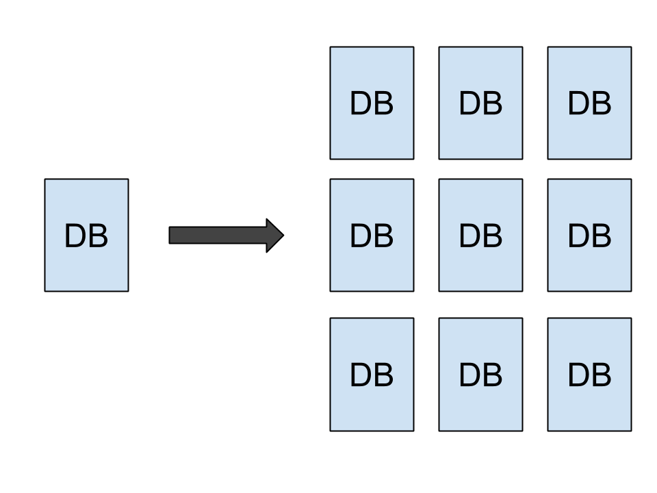

NoSQL
Más allá de Big Data
Mecanismos alternativos de persistencia para sistemas modernos.
@ajchambeaud
Ainu Jorge Chambeaud Helguera
Full Stack Web Developer
Software Architect
Docente
KhemLabs - UTN FRAAGENDA
- ¿Qué es y por qué existe NoSQL?
- ¿Es solo para Big Data?
- ¿Qué tipos de bases de datos NoSQL existen?
- Redis
- MongoDB
NoSQL o NOSQL
Ventajas de las Bases de Datos Relacionales
ACID
Eric Brewer
Teorema CAP
- Consistency (consistencia)
- Availability (disponibilidad)
- Partition tolerance (tolerancia al
particionado)
BASE
- Basic availability (disponibilidad básica)
- Soft state (estado ¿Flexible?)
- Eventual consistency (consistencia eventual)
Basic availability
Cada request debe ser respondido (de forma exitosa o con fallo)
Soft state
El estado del sistema puede cambiar a lo largo del tiempo (incluso sin ninguna entrada)
Eventual consistency
La base de datos puede quedar momentaneamente inconsistente, pero eventualmente volverá a ser consistente.
Principal problema de las Bases Relacionales
Escalabilidad Web / Big Data
Escalabilidad Vertical
Escalabilidad Horizontal (sistemas distribuidos)
Inicios: Google Big Data Papers
- GFS: filesystem distribuido (2003)
- MapReduce: Sistema de Procesamiento de datos distribuido (2004)
- Chubby: DLM (administrador de bloqueos distribuido) (2006)
- Big Table: NoSQL Database Orientada a Columnas (2006)
AGENDA
- ¿Qué es y por qué existe NoSQL?
- ¿Es solo para Big Data?
- ¿Qué tipos de bases de datos NoSQL existen?
- Redis
- MongoDB
BIG DATA: el problema que nos encantaría tener.
Otras ventajas de usar NoSQL
- Velocidad de desarrollo
- Esquema de datos flexible
- Velocidad de respuesta
- Crecimiento e integración
AGENDA
- ¿Qué es y por qué existe NoSQL?
- ¿Es solo para Big Data?
- ¿Qué tipos de bases de datos NoSQL existen?
- Redis
- MongoDB
- Key-value
- Column oriented
- Document
- Graph
Column oriented
Bases de Datos Orientadas a Columnas
- Apache Cassandra
- HBase
- Google BigTable
Graph Databases
Bases de Datos Orientadas a Grafos
- Neo4j
- Titan
- OrientDB
Key-Value
- Redis
- Riak
Bases de Datos Documentales
- MongoDB
- CouchDB
AGENDA
- ¿Qué es y por qué existe NoSQL?
- ¿Es solo para Big Data?
- ¿Qué tipos de bases de datos NoSQL existen?
- Redis
- MongoDB
- Base de Datos en Memoria
- Key-Value
- Servidor de estructuras de datos
- Pub-Sub Pattern
DEMO REDIS
AGENDA
- ¿Qué es y por qué existe NoSQL?
- ¿Es solo para Big Data?
- ¿Qué tipos de bases de datos NoSQL existen?
- Redis
- MongoDB
humongous

- Orientada a Documentos (JSON/BSON)
- Consola Shell y "stored procedure" en JavaScript
- Modelo de Datos Flexible
- Indices
- Lenguaje de Querys versatil basado en JSON
- Replica Set y Sharding